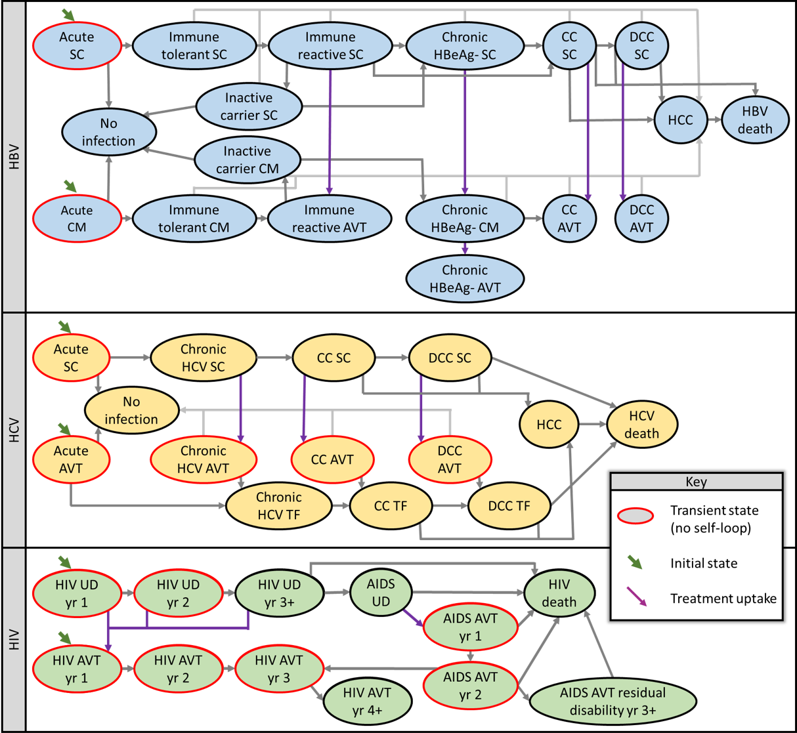
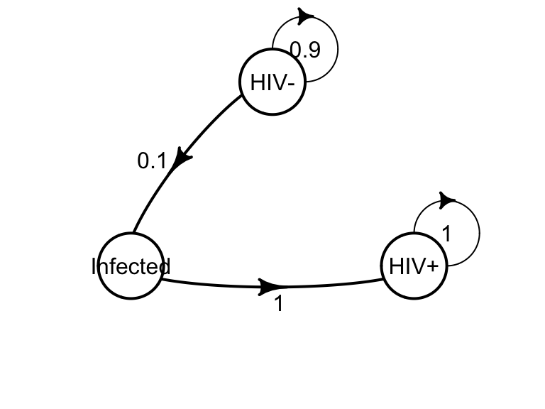

Cohort models 1
EPIB 676 session 4, McGill University
2023-09-12
Today
Discrete-time cohort state-transition models
Markov model solution
Health-economic outcomes
Packages
Cohort state-transition model
Dynamic mathematical model
A hypothetical cohort of individuals move between health states over time.
Classical example is the Markov model, where transition probabilities
Are constant
Depend only on your current state
When to use?
Decision problem has a dynamic component
Disease process varies over time
Can represent process with relatively few ‘states’
Example: Transfusion-transmitted chronic conditions

TU=treatment uptake; SC=subclinical; AVT=antiviral therapy; TE=treatment effectiveness; TF=treatment failure; CC=compensated cirrhosis; DCC=decompensated cirrhosis.
States
Healthy, acute infection, chronic infection, cirrhosis, untreated disease, in treatment, on wait list, lost to follow-up, dead…
Mutually exclusive and exhaustive
Individuals in the same state treated as identical
same costs, health outcomes
same probability of transitioning out (no matter how long they’ve been there)
Transitions, cycles, time horizon
Only transition at end of a cycle
Cycle duration is design choice (1 second, day, month, quarter, year…)
Time horizon = cycle duration x number of cycles
Transition matrix
\[ P=\\ \begin{bmatrix} p_{s_1 \rightarrow s_1} & p_{s_1 \rightarrow s_2} & p_{s_1 \rightarrow s_3}\\ p_{s_2 \rightarrow s_1} & p_{s_2 \rightarrow s_2} & p_{s_2 \rightarrow s_3}\\ p_{s_3 \rightarrow s_1} & p_{s_3 \rightarrow s_2} & p_{s_3 \rightarrow s_3} \end{bmatrix} \]
\(n_s \times n_s\) matrix of transition probabilities
- \(n_s\) is number of states
Rows correspond to “from” state (sum to 1)
Columns correspond to “to” states
Transition matrix example
Absorbing states
\[ \begin{array}{c}\begin{matrix}alive & dead \end{matrix} \\\left[\ \begin{matrix} 0.9 & 0\\ 0 & 1 \end{matrix}\ \right] \end{array} \]
No escape (like death)
Transition matrix row has a 1 on diagonal entry, all other entries 0
Tunnel states

\[ \begin{array}{c}\begin{matrix}HIV- & Infected & HIV+\end{matrix} \\\left[\ \begin{matrix} 0.9 & .1 & 0\\ 0 & 0 & 1\\ 0 & 0 & 1 \end{matrix}\ \right] \end{array} \]
Temporary state, 1 cycle only
No self-loop (0 on diagonal)
A ‘workaround’ for the Markov property.
If costs, outcomes, or transitions differ for beginning or end of health condition, break into tunnel states
Example: Transfusion-transmitted chronic conditions
TU=treatment uptake; SC=subclinical; AVT=antiviral therapy; TE=treatment effectiveness; TF=treatment failure; CC=compensated cirrhosis; DCC=decompensated cirrhosis.
Transition matrix for HIV model
Tunnel states: no self loop
Absorbing states: only self loop
Initial state vector \(m_0\)
\(1 \times n_s\) vector showing how cohort is distributed at time 0
Sum of the vector is the total cohort size
Whole cohort may start in single state…
\[ m_0 = \begin{bmatrix} 10,000 & 0 & 0 & 0\\ \end{bmatrix} \]
… or be spread across states
\[ m_0 = \begin{bmatrix} 2,000 & 3,000 & 1,000 & 4,000\\ \end{bmatrix} \]
Rates and probabilities
Rates: instantaneous force of an event
Probabilities: cumulative risk of event over defined period
We need transition probabilities specific to cycle length
We may have:
probability for different cycle length (2-year instead of 6 month)
rate (e.g., 200 events per person-year)
Converting rates to probabilities
Generating an annual probablity \(p(t)\) from an event rate \(r\) with units events/year:
\[ p(t) = 1 - e^{-rt} \quad r = -\frac{1}{t}log(1-p) \]
Example:
In a population of 800, 87 became ill over a 2 year period
What’s the rate?
Converting rates to probabilities
Generating an annual probablity \(p(t)\) from an event rate \(r\) with units events/year:
\[ p(t) = 1 - e^{-rt} \quad r = -\frac{1}{t}log(1-p) \]
Example:
In a population of 800, 87 became ill over a 2 year period
\(r = 87/(2 \times 800) = 0.0544\) illnesses/year
What’s the transition probability for 0.5 year cycle length?
Converting rates to probabilities
Generating an annual probablity \(p(t)\) from an event rate \(r\) with units events/year:
\[ p(t) = 1 - e^{-rt} \quad r = -\frac{1}{t}log(1-p) \]
Example:
In a population of 800, 87 became ill over a 2 year period
\(r = 87/(2 \times 800) = 0.0544\) illnesses/year
\(p_{0.5 year} = 1 - e^{-0.0544(0.5)} = 0.0268\)
Prob → rate → prob
If probability is for a duration that doesn’t match your cycle length, you can not simply multiply/divide the probability
Must convert to a rate then convert back to probability (with new cycle length)
Example: One-year prob. of developing cancer is 0.2. What transition prob. do I use with a 1-month cycle length?
\[ p(t) = 1 - e^{-rt} \quad r = -\frac{1}{t}log(1-p) \]
Prob → rate → prob
Wrong way
Right way
Today
Discrete-time cohort state-transition models
Markov model solution
Health-economic outcomes
Matrix calculations in R
Markov model components
Transition matrix
\[ P =\begin{array}{c}\begin{matrix}Healthy & moderate & severe & dead \end{matrix} \\\left[\ \begin{matrix} p_{H \rightarrow H} & p_{H \rightarrow M} & p_{H \rightarrow S} & p_{H \rightarrow D}\\ p_{M \rightarrow H} & p_{M \rightarrow M} & p_{M \rightarrow S} & p_{M \rightarrow D}\\ p_{S \rightarrow H} & p_{S \rightarrow M} & p_{S \rightarrow S} & p_{S \rightarrow D}\\ p_{D \rightarrow H} & p_{D \rightarrow M} & p_{D \rightarrow S} & p_{D \rightarrow D} \end{matrix}\ \right] \end{array} \]
initial distribution: \(m_0 = \begin{bmatrix} 2000 & 0 & 0 & 0 \end{bmatrix}\)
20 cycles, cycle length 1 year
Parameterizing the matrix
Copy/paste and fill in the transition matrix. Use variable names rather than typing the numbers directly.
v_state_names <- c("H","M","S","D") #vector of state names
m_0 = matrix(c(2000, 0, 0, 0), nrow = 1, #initial dist
dimnames = list(c(""), v_state_names))
p_HtoM = 0.2 #otherwise stays in healthy
p_MtoH = 0.4; p_MtoS = 0.4; p_MtoD = 0.01 #otherwise stay in moderate
p_StoH = 0.1; p_StoD = 0.3 #otherwise stay in severe
n_cycles = 20
mat_P = matrix(c(NA, NA, NA, NA,
NA, NA, NA, NA,
NA, NA, NA, NA,
NA, NA, NA, NA),
nrow = 4, byrow = T,
dimnames = list(v_state_names,
v_state_names))Parameterizing the transition matrix
mat_P = matrix(c(1-p_HtoM, p_HtoM, 0, 0,
p_MtoH, 1-p_MtoH-p_MtoS-p_MtoD, p_MtoS, p_MtoD,
p_StoH, 0, 1-p_StoH-p_StoD, p_StoD,
0, 0, 0, 1),
nrow = 4, byrow = T,
dimnames = list(v_state_names,
v_state_names))
mat_P H M S D
H 0.8 0.20 0.0 0.00
M 0.4 0.19 0.4 0.01
S 0.1 0.00 0.6 0.30
D 0.0 0.00 0.0 1.00H M S D
1 1 1 1 Matrix solution: partial definition
\(m_t\): matrix describing the cohort distribution after cycle \(t\) (dims \(1 \times n_s\))
\(P\): transition probability matrix (dims \(n_s \times n_s\)).
\[ m_t = m_{t-1} P \]
\[ \begin{bmatrix} m^{t-1}_A & m^{t-1}_B\\ \end{bmatrix} \begin{bmatrix} p_{A \rightarrow A} & p_{A \rightarrow B}\\ p_{B \rightarrow A} & p_{B \rightarrow B}\\ \end{bmatrix}\\ =\\ \begin{bmatrix} m^{t-1}_A(p_{A \rightarrow A})+ m^{t-1}_B(p_{B \rightarrow A})& m^{t-1}_A(p_{A \rightarrow B})+ m^{t-1}_B(p_{B \rightarrow B})\\ \end{bmatrix} \]
Partial definition example
Matrix solution definition
Note the following
\[ \begin{aligned} & m_1 = m_{0} P\\ & m_{2} = m_{1}P = (m_0P)P = m_0P^2\\ & m_{3} = m_{2} P = (m_0 P^2)P = m_0 P^3\\ \end{aligned} \]
Therefore (the full matrix solution):
\[ m_t = m_0 P^t \]
“After cycle t, cohort distribution is the initial distribution times the transition matrix raised to the power of t”
Matrix solution code
Storing cohort distribution over time
Use matrix \(M\) to store cohort distribution after each cycle:
\(n_s\) columns corresponding to our states
\(T+1\) rows corresponding to our state distribution after cycle \(0, 1, ... t,…,T\)
H M S D
0 0 0 0 0
1 0 0 0 0
2 0 0 0 0
3 0 0 0 0
4 0 0 0 0
5 0 0 0 0
6 0 0 0 0
7 0 0 0 0
8 0 0 0 0
9 0 0 0 0
10 0 0 0 0
11 0 0 0 0
12 0 0 0 0
13 0 0 0 0
14 0 0 0 0
15 0 0 0 0
16 0 0 0 0
17 0 0 0 0
18 0 0 0 0
19 0 0 0 0
20 0 0 0 0Storing state transitions
H M S D
0 2000.0000 0.0000 0.0000 0.0000
1 1600.0000 400.0000 0.0000 0.0000
2 1440.0000 396.0000 160.0000 4.0000
3 1326.4000 363.2400 254.4000 55.9600
4 1231.8560 334.2956 297.9360 135.9124
5 1148.9966 309.8874 312.4798 228.6362
6 1074.4002 288.6779 311.4428 325.4790
7 1006.1356 269.7289 302.3369 421.7986
8 943.0337 252.4756 289.2937 515.1970
9 884.3466 236.5771 274.5664 604.5098
10 829.5648 221.8190 259.3707 689.2455
11 778.3165 208.0586 244.3500 769.2749
12 730.3116 195.1944 229.8334 844.6605
13 685.3104 183.1493 215.9778 915.5625
14 643.1058 171.8604 202.8464 982.1873
15 603.5135 161.2746 190.4520 1044.7599
16 566.3658 151.3449 178.7811 1103.5082
17 531.5087 142.0287 167.8066 1158.6560
18 498.7991 133.2872 157.4954 1210.4183
19 468.1037 125.0844 147.8121 1258.9998
20 439.2979 117.3868 138.7210 1304.5942Cohort trace diagram
Line plot showing num of people (y-axis) in each state (x-axis)
Convert \(M\) into long-format data table for ggplot
t_trace <- as_tibble(M) #convert from matrix
t_trace$Cycle_num <- 0:20 #add col for cycle number
t_trace <- t_trace |> #Long to wide
gather(key=State, value=Count, H:D) #wide to long format
t_trace# A tibble: 84 × 3
Cycle_num State Count
<int> <chr> <dbl>
1 0 H 2000
2 1 H 1600
3 2 H 1440
4 3 H 1326.
5 4 H 1232.
6 5 H 1149.
7 6 H 1074.
8 7 H 1006.
9 8 H 943.
10 9 H 884.
# ℹ 74 more rowsCohort trace diagram
Today
Discrete-time cohort state-transition models
Markov model solution
Health-economic outcomes
Costs and QALYs as ‘rewards’
Costs and QALYs can be added to a cohort model in two ways:
Per cycle spent in a state (state reward)
Per transition (transition reward/toll)
Must assign same rewards to everyone in the same state or making transition. People in same state or making same transition treated as identical!
State reward vector
Per-cycle reward for each state stored as a \(1 \times n_s\) reward vector:
\[ \textbf{c} = \begin{bmatrix} c_{H} & c_{M} & c_{S} & c_{D} \end{bmatrix}\\ \textbf{q} = \begin{bmatrix} q_{H} & q_{M} & q_{S} & q_{D} \end{bmatrix} \]
Ex: model with state rewards
v_state_names <- c("H","M","S","D") #vector of state names
m_0 = matrix(c(2000, 0, 0, 0), nrow = 1, #initial dist
dimnames = list(c(""), v_state_names))
n_cycles = 20; p_HtoM = 0.2; p_MtoH = 0.4; p_MtoS = 0.4; p_MtoD = 0.01; p_StoH = 0.1; p_StoD = 0.3
mat_P = matrix(c(1-p_HtoM, p_HtoM, 0, 0,
p_MtoH, 1-p_MtoH-p_MtoS-p_MtoD, p_MtoS, p_MtoD,
p_StoH, 0, 1-p_StoH-p_StoD, p_StoD,
0, 0, 0, 1),
nrow = 4, byrow = T,
dimnames = list(v_state_names, v_state_names))
#State reward vectors
v_cost_states = matrix(c(182, 150, 500, 0), nrow=1,
dimnames = list(c(""), v_state_names)); v_cost_states H M S D
182 150 500 0v_qaly_states = matrix(c(1, 0.8, 0.6, 0), nrow=1,
dimnames = list(c(""), v_state_names)); v_qaly_states H M S D
1 0.8 0.6 0Compute rewards as model runs
To compute total costs/QALYs in cycle \(t\) by state:
Create \(T \times n_s\) matrices \(M_C\) and \(M_Q\)
\(M_C[t, j]\) is sum of costs incurred during cycle \(t\) for people ending the cycle in state \(j\).
Row \(M_C[t, \text{ }] = c \bigodot m_t\)
Or, compute total costs/QALYs during cycle \(t\) (all states):
- \(m_t \times \textbf{c}^T\) and \(m_t \times \textbf{q}^T\) (dot product)
\(\bigodot\) indicates element-wise multiplication
Ex: run model & store rewards
#m_M will store dist'n after cycle t; first row is cycle 0
m_M = matrix(0, nrow=21, ncol=4,
dimnames = list(0:20, c("H","M","S","D")))
m_M[1,] <- m_0
#m_cost_by_cyclestate & m_qalys_by_cyclestate will store
#. rewards gained in cycle t for each state
m_cost_by_cyclestate = matrix(0, nrow=20, ncol=4,
dimnames = list(1:20, c("H","M","S","D")))
m_qalys_by_cyclestate = matrix(0, nrow=20, ncol=4,
dimnames = list(1:20, c("H","M","S","D")))
for (i in 1:20){
m_t <- m_M[i,] %*% (mat_P %^% i) #m_M[i, ] is m_{t-1}
m_M[i+1,] <- m_t #for m_M, row i+1 corresponds to cycle t
#For reward matrices; row i corresponds to cycle t
m_cost_by_cyclestate[i,] <- m_t * v_cost_states
m_qalys_by_cyclestate[i,] <- m_t * v_qaly_states
}Ex: run model and store rewards
H M S D
1 2.912000e+05 6.000000e+04 0.000000e+00 0
2 2.414048e+05 5.448600e+04 1.272000e+05 0
3 1.955408e+05 4.330169e+04 1.557214e+05 0
4 1.509808e+05 3.327285e+04 1.296854e+05 0
5 1.098395e+05 2.419120e+04 9.522601e+04 0
6 7.503226e+04 1.652446e+04 6.509367e+04 0
7 4.810315e+04 1.059380e+04 4.173272e+04 0
8 2.894129e+04 6.373768e+03 2.510853e+04 0
9 1.634106e+04 3.598807e+03 1.417698e+04 0
10 8.658857e+03 1.906949e+03 7.512147e+03 0
11 4.305851e+03 9.482818e+02 3.735618e+03 0
12 2.009442e+03 4.425414e+02 1.743327e+03 0
13 8.800553e+02 1.938155e+02 7.635078e+02 0
14 3.617117e+02 7.966012e+01 3.138095e+02 0
15 1.395189e+02 3.072639e+01 1.210422e+02 0
16 5.050353e+01 1.112244e+01 4.381525e+01 0
17 1.715649e+01 3.778391e+00 1.488442e+01 0
18 5.469569e+00 1.204569e+00 4.745223e+00 0
19 1.636424e+00 3.603913e-01 1.419709e+00 0
20 4.594695e-01 1.011894e-01 3.986210e-01 0 H M S D
1 1.600000e+03 3.200000e+02 0.000000e+00 0
2 1.326400e+03 2.905920e+02 1.526400e+02 0
3 1.074400e+03 2.309423e+02 1.868657e+02 0
4 8.295648e+02 1.774552e+02 1.556224e+02 0
5 6.035135e+02 1.290197e+02 1.142712e+02 0
6 4.122652e+02 8.813046e+01 7.811240e+01 0
7 2.643030e+02 5.650029e+01 5.007927e+01 0
8 1.590181e+02 3.399343e+01 3.013024e+01 0
9 8.978603e+01 1.919364e+01 1.701237e+01 0
10 4.757614e+01 1.017039e+01 9.014576e+00 0
11 2.365852e+01 5.057503e+00 4.482742e+00 0
12 1.104089e+01 2.360221e+00 2.091993e+00 0
13 4.835469e+00 1.033682e+00 9.162094e-01 0
14 1.987427e+00 4.248540e-01 3.765714e-01 0
15 7.665875e-01 1.638741e-01 1.452506e-01 0
16 2.774919e-01 5.931970e-02 5.257830e-02 0
17 9.426643e-02 2.015142e-02 1.786130e-02 0
18 3.005258e-02 6.424366e-03 5.694268e-03 0
19 8.991342e-03 1.922087e-03 1.703651e-03 0
20 2.524558e-03 5.396769e-04 4.783452e-04 0Transition rewards (can be added)
To simulate cost/QALY rewards during transitions:
Create \(n_s \times n_s\) reward matrix for each outcome (e.g., \(C\) for cost, \(Q\) for QALYs)
Set \(C[\text{ }, j] \leftarrow c_j\) (state reward) for each column \(j\)
Add the \(i \rightarrow j\) transition reward to \(C[i,j]\)
Diagonal entries never change \(C[j,j] = c_j\)
Total rewards of people ending cycle \(t\) in each state:
- \(\hat{C}_{t} = m_{t-1} ( P \bigodot C)\); \(\hat{Q}_{t} = m_{t-1} ( P \bigodot Q)\)
\(\bigodot\) indicates element-wise multiplication
Ex: reward matrix w transition rewards
\[ \textbf{C}= \begin{bmatrix} c_H & c_M+c_{H \rightarrow M} & c_S+c_{H \rightarrow S} & c_D+c_{H \rightarrow D}\\ c_H+c_{M \rightarrow H} & c_M & c_S+c_{M \rightarrow S} & c_D+c_{M \rightarrow D}\\ c_H+c_{S \rightarrow H} & c_M+c_{S \rightarrow M} & c_S & c_D+c_{S \rightarrow D}\\ c_H+c_{D \rightarrow H} & c_M+c_{D \rightarrow M} & c_S+c_{D \rightarrow S} & c_D \end{bmatrix},\\ \textbf{Q} = \begin{bmatrix} q_H & q_M+q_{H \rightarrow M} & q_S+q_{H \rightarrow S} & q_D+q_{H \rightarrow D}\\ q_H+q_{M \rightarrow H} & q_M & q_S+q_{M \rightarrow S} & q_D+q_{M \rightarrow D}\\ q_H+q_{S \rightarrow H} & q_M+q_{S \rightarrow M} & q_S & q_D+q_{S \rightarrow D}\\ q_H+q_{D \rightarrow H} & q_M+q_{D \rightarrow M} & q_S+q_{D \rightarrow S} & q_D \end{bmatrix} \]
Discounting
Must discount to get net present costs or QALYs
Can create “discount multiplier vector” to apply for cost and outcomes from each cycle
disc_rate = 0.03; cycle_length = 0.5; n_cycles = 20
disc_mults <- 1/((1+(disc_rate*cycle_length))^(1:n_cycles))
disc_mults [1] 0.9852217 0.9706617 0.9563170 0.9421842 0.9282603 0.9145422 0.9010268
[8] 0.8877111 0.8745922 0.8616672 0.8489332 0.8363874 0.8240270 0.8118493
[15] 0.7998515 0.7880310 0.7763853 0.7649116 0.7536075 0.7424704[1] 17168.64Ex: discounting
disc_rate = 0.03; cycle_length = 1; n_cycles = 20
disc_mults <- 1/((1+(disc_rate*cycle_length))^(1:n_cycles))
#undiscounted cost by year
rowSums(m_cost_by_cyclestate) 1 2 3 4 5 6
3.512000e+05 4.230908e+05 3.945640e+05 3.139390e+05 2.292567e+05 1.566504e+05
7 8 9 10 11 12
1.004297e+05 6.042358e+04 3.411684e+04 1.807795e+04 8.989751e+03 4.195311e+03
13 14 15 16 17 18
1.837379e+03 7.551813e+02 2.912875e+02 1.054412e+02 3.581930e+01 1.141936e+01
19 20
3.416525e+00 9.592799e-01 1 2 3 4 5 6
3.409709e+05 3.988037e+05 3.610819e+05 2.789307e+05 1.977588e+05 1.311922e+05
7 8 9 10 11 12
8.165852e+04 4.769894e+04 2.614772e+04 1.345169e+04 6.494388e+03 2.942507e+03
13 14 15 16 17 18
1.251165e+03 4.992638e+02 1.869663e+02 6.570748e+01 2.167127e+01 6.707671e+00
19 20
1.948396e+00 5.311300e-01 [1] 1889166Initial costs
Often, we have initial costs at time 0
Example: intervention at time 0 has a cost, then cohort enters Markov model to understand post-transfusion outcomes/costs
Can simply add initial cost to the net present costs from the model
Indexing
Important to get right, easy to get wrong. My convention:
matrix \(M\) (cohort distribution) starts at 0, has \(T+1\) rows
Assign \(m_0 \rightarrow M[1, \text{ }]\),
Loop from 1 to \(T\) to fill \(M[2:(T+1),\text{ }]\)
\(M_C\) and \(M_Q\) (cohort rewards) start at 1, have \(T\) rows
- Loop from 1 to \(T\) to fill \(M[1:T,\text{ }]\)
Recap
Cohort models: simulate cohort transitioning between states over time
If transitions are constant, it’s a Markov model (can use the matrix solution)
Health-economic outcomes can be added as state rewards and/or transition rewards
Indexing of matrices, arrays, and loops is tricky!
Logistics
- Assignment 1 (cost-effectiveness, decision trees) due Friday 9/15
- Assignment 2 available; due Wednesday 9/26
- Trickier; you have more time for a reason!
- Office hours 1:15 - 2pm, room #1122